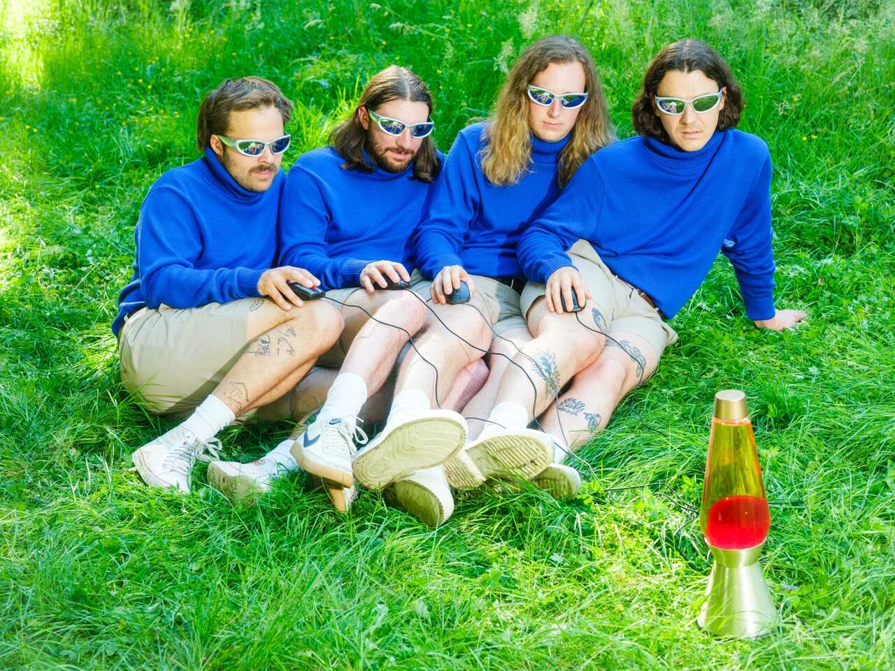

Peach Pit Fan Page
Welcome, fellow Peach Pit fan!
If you’ve made your way here, you’re clearly into all things Peach Pit — and you’ve come to the right place. This site is built and maintained by a small group of fans who wanted a single spot to share our love for the band and everything that makes them great. Consider this your unofficial home base for Peach Pit appreciation.
If you ended up here by mistake (we forgive you!), and you’re actually looking for the official Peach Pit website, you can find it HERE
For everyone else, please feel free to explore! You’ll find plenty of Peach Pit content to dive into: their story, a photo gallery, highlights from their biggest tours, and a few fun facts we couldn’t resist adding. Because really, what kind of fan page would it be without those?
So kick back, put on your favorite track, and enjoy browsing. Welcome to our unofficial Peach Pit fan page - made by fans, for fans.
